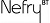
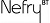

Nefryの便利な関数
Nefryの便利な関数をまとめてみました。
ndelay
 

delayではすべての処理が止まってしまいますがこちらを選ぶことで停止時間にNefryのWeb表示などの様々な機能を継続することができます。 基本的に500ミリ秒以上の待ち時間になる場合はこちらを選んでください。
| 引数1 | unsigned long | ミリ秒で時間を指定します。1000ミリ秒＝1秒 |
| 返り値 | void | なし |
| 具体例 | Nefry.ndelay(1000);//一秒待つ |
reset
Nefryをリセットし、プログラムを初めからやり直します。
| 引数 | なし | |
| 返り値 | void | なし |
| 具体例 | Nefry.reset(); |
sleep
Nefryを省電力モードのスリープモードにします。スリープモードに入ると処理ができません。
スリープが終わった後はプログラムを初めからやり直します。
スリープモードを強制的終了させるにはNefry本体のリセットボタンを押すか、指定した時間が経つのを待つしかありません。
0を入力することで、無期限スリープモードになります。
| 引数1 | int | ここにスリープする秒数を入力します。単位は秒です。 |
| 返り値 | void | なし |
| 具体例 | Nefry.sleep(30); |
getWebServer
ESP8266WebServerを扱うことができます。ユーザ側でWebページを追加することができます。
Nefryのメインページにそのリンクを貼りたいときはsetIndexLink関数を使ってください。
| 引数 | なし | |
| 返り値 | ESP8266WebServer* | ESP8266WebServerのポインタで返ってきます。 |
| 具体例 | Nefry.getWebServer(); |
setIndexLink
Nefryのメインページにリンクを貼ることができます。
| 引数1 | const char[32] | メインページに表示したい文字をいれてください。 |
| 引数2 | const char[32] | そのページのURLを入力してください。 |
| 返り値 | void | なし |
| 具体例 | Nefry.setIndexLink("Nefryの秘密","/secret"); |
setProgramName
Nefryのトップページで表示されるプログラム名を設定できます。
| 引数1 | const char* | プログラム名を設定できます。 |
| 返り値 | void | なし |
| 具体例 | Nefry.setProgramName(10); |
getProgramName
Nefryのトップページで表示されるプログラム名を取得することができます。
| 引数 | なし | |
| 返り値 | String | プログラム名を取得することができます。 |
| 具体例 | Nefry.getProgramName(); |
getVersion
Nefryライブラリのバージョンを取得することができます。
| 引数 | なし | |
| 返り値 | String | Nefryライブラリのバージョンを取得することができます。 |
| 具体例 | Nefry.getVersion(); |
getModuleName
NefryのModule名を取得することができます。
| 引数 | なし | |
| 返り値 | char* | NefryのModule名を取得することができます。 |
| 具体例 | Nefry.getModuleName(); |